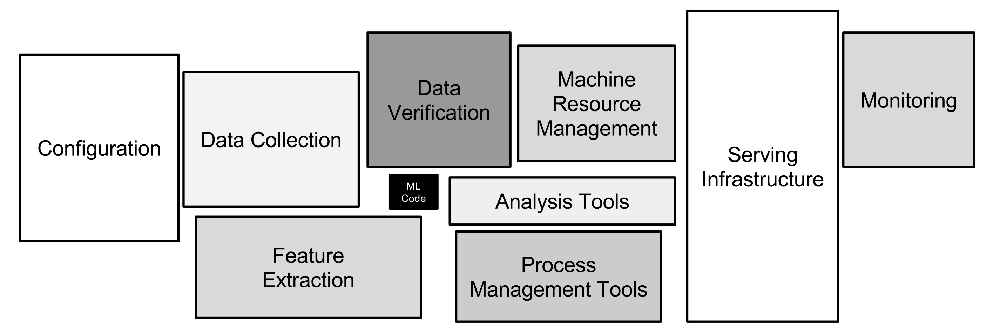
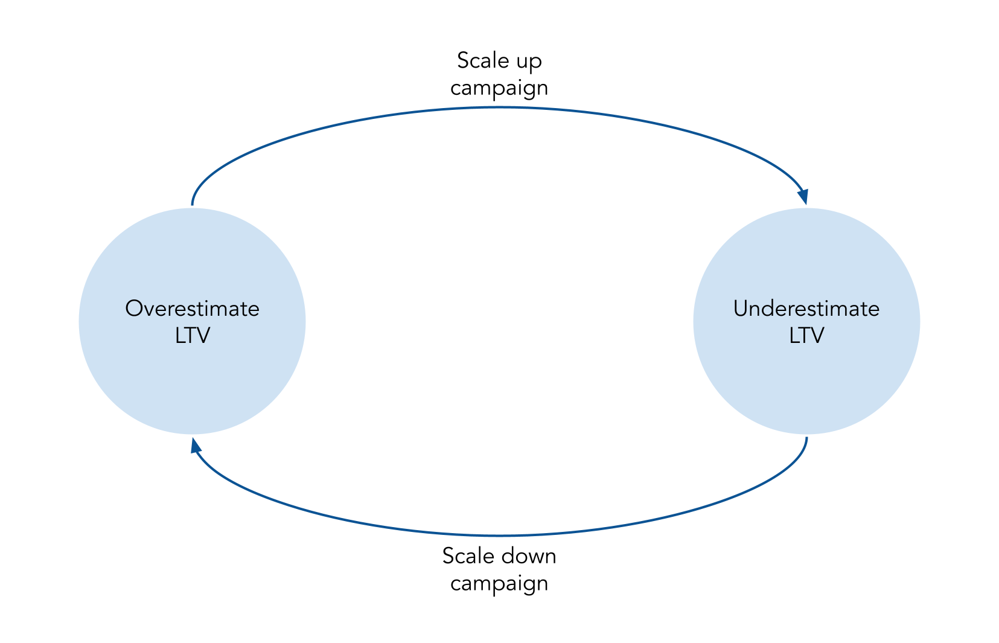

What are common challenges that we face when building LTV predictions?
Forecasting Lifetime Value - Challenges
On the first topic of this series, I explained Why Uncertainty Matters in marketing campaigns and how one should adapt the bidding to different degrees of Lifetime Value (LTV) uncertainty and user acquisition response to the bid.
Initially, I was going to demonstrate in this part one way to estimate LTV with confidence intervals. However, I found this was not sufficiently interesting for people who work on this domain, even if I demonstrated using PySTAN. While I did write one notebook instructing how one can predict LTV with uncertainty estimates using XGBoost and PySTAN, which you can see in this notebook, I decided to be more enriching in discussing problems that teams building Lifetime Value prediction models encounter.
This will be a growing section, but for now there are the following topics:
- One model to rule them all? LTV predictions can be used for different use cases. Should we have one model for all use cases or one for each?
- Should you be using a supervised approach at all? When LTV predictions are used for marketing, it creates a feedback loop where the model influences the future data it is trained in, similar to what happens in Reinforcement Learning. Is supervised learning appropriate for this situation?
1- One model to rule them all?
One of the most significant benefits of working with LTV estimation is the vast impact that it can have across the company. After all, the Lifetime Value can be used for different goals, such as:
- prioritizing which product a company should focus on: the greater the (potential) profit a product has, the greater focus the company should have on it
- forecasings the cash flow of the following months, thus predicting the financial health of the company
- directly influencing marketing by estimating the profitability of endeavors of the marketing team. With an accurate Lifetime Value estimation, the marketing team can quickly scale winning strategies and cut back on the approaches that are not worth it.
But this broad impact of Lifetime Value estimation is a double-edged sword because each of those areas has its own needs and definition of an optimum model, which means that a change in the model can have opposite impact on distinct areas. One example is a change that worsens predictions for older users but improves predictions for newer users. This change is positive for the Marketing Team since they mostly care about the prediction for recent users, who were likely acquired by a marketing campaign so that they can better adjust their campaigns bid. On the other hand, the Product Team will oppose such change since older users form the most extensive user base of a product, and worsening the LTV on them may mean applying product changes that are detrimental to the existing users.
This challenge has been previously explored in Pitfalls of Modeling LTV and How to Overcome Them from Algolift (now Liftoff). There it brings four dimensions that may be different depending on the use cases: Stability, Accuracy, Temporal granularity, and Cohort granularity:
- Stability: What is a reasonable forecast update frequency? Frequent changes indicates inaccuracy. However, ignoring real surprising behavior that strongly changes LTV is also undesirable.”
- Accuracy: What are an acceptable level of variance (sample size) and bias (model sophistication)?
- Temporal granularity: How soon after installation does the forecast come? Is a cohort a week or a month? Different teams care about different temporal granularity and responsiveness.
- Cohort granularity: Does your end-user care about individual users, all users, or a country?
Then, Algolift shows how each use case has different needs and interests for the LTV predictions on those four dimensions:
| Application | Stability | Accuracy | Temporal Granularity | Cohort Granularity |
|---|---|---|---|---|
| Marketing Automation | Less important than responsiveness to market dynamics | Important to be directionally correct without channel/geo bias | 0 to 14 days | Campaign: 100 to 1000 users. Paid traffic |
| Accounting and Global Revenue Forecasting | Must be stable | Very important for forecast accuracy | Quarterly or Yearly | Country, platform, network, Paid and Organic |
| Product | Must be stable | Relative change more important than absolute value | Months | Country, Platform, network, Paid and Organic |
This table shows how each use case has different requirements for the LTV predictions. For example, while Marketing Automation requires that the projections are frequently updated to respond to market changes, this would be detrimental to Accounting. When Accounting needs to forecast the company’s global revenue for the following quarter (or year), having the LTV predictions change means that they can’t validate their forecasts.
1.1- Divide and conquer
Since each use case has its demands, creating one model for each use case appears as the most sensible answer. With each model optimized for only one specific metric, it is almost certain that we will reach a better value on each optimization metric. In addition, iterations on the model are much faster by having only one metric to optimize for one stakeholder, which again contributes to a better optimization metric.
But this approach has a scalability problem caused by the maintenance cost for the models and the need to solve for inconsistencies when each model accuses a different LTV. The differences in the predicted LTV are because each model is optimized for other goals, so they won’t necessarily indicate the same absolute values or relative changes in the product or the company. Thus we end up with another much more critical inconsistency problem: the perceived impact of strategic decisions. How can teams conclude when decisive information points to different directions, depending on which team sees it?
The answer is figuring out the source of divergence. While the models may output different values since their targets are not precisely the same, they should be reasonably similar. After all, the target is still the same (LTV), and the cost function is usually the same (ex: MSE). If we notice that models indicate values outside of the typical divergence, we know that at least one of them needs attention. This divergence can be calculated by comparing the output of the models on a period where it is known to have no deviations and then calculating a metric (ex: Mean Squared Error). Anytime the divergence metric falls outside the accepted value, an investigation must be conducted.
While the solution is simple, understanding the reason for the diverging predictions is time-consuming. It means that a Data Scientist, Data Analyst, or Machine Learning Engineer/Scientist has to stop their work to figure out the source of the problem. Depending on the complexity of the problem, it may take several days to find the cause of the differences. Even worse is when the source is not found even after lengthy investigations, and the problem just gets dropped because it is no longer relevant or considered part of the usual divergences between models.
The second problem is the cost of maintaining all the models within acceptable performance standards. This cost can quickly increase as different models often mean different codebases, so the responsible team needs to update in multiple places the same changes or be aware of all the minor differences between the models. As the number of models increases with complexity, supporting various models becomes unsustainable
This problem becomes even clearer when we remember that the machine-learning code is just a small component of the machine-learning system, as best explained in Hidden Technical Debt in Machine Learning Systems. As shown in the article through the image below, the serving system required to deliver machine-learning predictions has many other components besides the machine-learning (ML) code. And these other components often contain larger codebases

By having multiple-machine learning code, we are also multiplying the required infrastructure surrounding our code.
1.2 - My stance: one model to rule them all
With the issues raised before on having multiple LTV models, the best solution appears to always have a single one. Sadly, there is no universal solution for these practical problems. Whether building additional models is beneficial for the company depends on the available headcount to create and maintain these models, the financial impact that more accurate LTV predictions have, and the complexity of the existing code-base.
But to take a stance on this topic, most companies should benefit from having a single machine-learning code-base for the LTV. Based the 4 dimensions brought by AlgoLift and an additional we touched before, I argue that one model (or at least one code base) is frequently the best solution:
- Temporal and Cohort Granularity (AlgoLift): The granularity on how LTV predictions are consumed can be easily accommodated by adding a step that adjusts depending on the need. When the LTV Model predictions are more granular or as granular than what any stakeholder requires, a grouping step
- Stability (AlgoLift): as shown before, Product and Accounting may require that predictions are constant through time: once something is predicted, it doesn’t change any more. Keeping projections constant can also be solved by creating a mutable and immutable version of LTV predictions.
- Accuracy (AlgoLift): While clients can have different goals for the LTV model to optimize, most often, they will not cause divergence. For example, the Product cares for directional changes and Marketing Automation for the absolute values. If the LTV model doesn’t follow the changes, it will be biased and won’t satisfy the requirement for marketing.
- Iteration speed: the most potent argument for having multiple models is the ability to implement changes quickly. When a company has numerous different products with unique user bases and particularities, having more than one model can be better. Still, the various models should share many similarities, and I’m in favor of sharing as much code as possible between the models and periodically attempting to unify them. Quite often, the solutions particular to one case are because we need to understand the underlying mechanism properly. When we do, we can find a solution that i s beneficial for all use cases.
1.3- Conclusion
Predicting Lifetime Value can broadly impact the company, creating demands for different variations optimized for each use case. While there are cases where a company should have multiple LTV models, I defend holding with a single model (or at least a single code-base) as much as possible.
2- Should you be using a supervised approach at all?

In Lifetime Value prediction, the most common approach is using supervised machine-learning algorithms such as XGBoost. After all, this problem can be easily organized as tabular data, as in the Lifetime Value dataset from Kaggle:
!kaggle datasets download -d baetulo/lifetime-value
!unzip -j lifetime-value.zip
!rm lifetime-value.zip test.csvDownloading lifetime-value.zip to /Users/raphaeltamaki/Documents/personal_git/lifetime_value_forecasting
95%|████████████████████████████████████ | 10.0M/10.5M [00:00<00:00, 49.0MB/s]
100%|██████████████████████████████████████| 10.5M/10.5M [00:00<00:00, 45.9MB/s]
Archive: lifetime-value.zip
inflating: test.csv
inflating: train.csv import pandas as pd
pd.read_csv('train.csv').head()| product_type | user_id | join_date | hidden | product | STV | target | credit_card_level | is_lp | aff_type | is_cancelled | country_segment | |
|---|---|---|---|---|---|---|---|---|---|---|---|---|
| 0 | type_ex | 7.0 | 2018-12-01 00:01:45 | 0 | product_1 | 8.25 | 8.25 | standard | 0 | PPL | NaN | US |
| 1 | type_ex | 20.0 | 2018-12-01 00:06:05 | 0 | product_2 | 8.25 | 8.25 | standard | 0 | PPL | NaN | US |
| 2 | type_ex | 22.0 | 2018-12-01 00:06:23 | 0 | product_3 | 8.25 | 8.25 | prepaid | 0 | PPL | NaN | US |
| 3 | type_ex | 26.0 | 2018-12-01 00:07:12 | 0 | product_2 | 8.25 | 8.25 | standard | 0 | PPL | NaN | US |
| 4 | type_ex | 59.0 | 2018-12-01 00:15:21 | 0 | product_2 | 8.25 | 8.25 | standard | 0 | PPL | NaN | Other Countries |
While commonplace, this approach faces a problem when its LTV predictions define bids (i.e., CPI, CPA, ROAS) in marketing campaigns. When they are, we create a feedback loop in the system, where the model’s predictions for a set of users impact the probability of further having similar users. Take the example below, where we have 2 marketing campaigns with slightly different types of users. And because they are other users, our model outputs somewhat different predictions, even though they have the same true LTV of $2.00.
Take the example below, where we have 2 marketing campaigns with slightly different types of users. And because they are other users, our model outputs somewhat different predictions, even though they have the same true LTV of $2.00.
| Period | True LTV | Predicted LTV (A) | Predicted LTV (B) | CPI (A) | CPI (B) | Users (A) | Users (B) | True Revenue (A+B) | Predicted Revenue (A+B) | Bias | Cost | Profit |
|---|---|---|---|---|---|---|---|---|---|---|---|---|
| Period 1 | $2 | $3 | $1 | $1 | $1 | 100 | 100 | $400 | $400 | 0% | $200 | $200 |
Based on the LTV predictions, the company adjusts the bids for the 2 campaigns by increasing Campaign A’s CPI and decreasing Campaign B’s. Let’s assume for simplicity that the number of users acquired by the 2 campaigns is proportional to their CPI, thus following a linear relationship. In this case, the optimal CPI equals half of the LTV. We then use the updated bids to acquire some users until we observe their LTV.
| Period | True LTV | Predicted LTV (A) | Predicted LTV (B) | CPI (A) | CPI (B) | Users (A) | Users (B) | True Revenue (A+B) | Predicted Revenue (A+B) | Bias | Cost | Profit |
|---|---|---|---|---|---|---|---|---|---|---|---|---|
| Period 1 | $2 | $3 | $1 | $1 | $1 | 100 | 100 | $400 | $400 | 0% | $200 | $200 |
| Period 2 | $2 | $3 | $1 | $1.50 | $0.50 | 150 | 50 | $400 | $500 | 25% | $250.00 | $150 |
We see that even though initially the LTV model was not biased, we ended up with a biased model after the model’s inputs were used to adjust the bids in the marketing campaigns. In addition, notice that this is not the problem of drift common when training the model since the correct value of LTV didn’t change. And to make things worse, we often only realize that the model is biased because the target (i.e., LTV) of the recently acquired users is only observed after a long time.
However, this is not a problem that always occurs. It only happens when the bids for the campaigns need to be adjusted with the predicted LTV. When they don’t need to be adjusted, we don’t have the previous problem since the number of users doesn’t change.
| Period | True LTV | Predicted LTV (A) | Predicted LTV (B) | CPI (A) | CPI (B) | Users (A) | Users (B) | True Revenue (A+B) | Predicted Revenue (A+B) | Bias | Cost | Profit |
|---|---|---|---|---|---|---|---|---|---|---|---|---|
| Period 1 | 2 | $3 | $1 | $1.50 | $0.50 | 100 | 100 | $400 | $400 | 0% | $200.00 | $200 |
| Period 2 | 2 | $3 | $1 | $1.50 | $0.50 | 100 | 100 | $400 | $400 | 0% | $200.00 | $200 |
However, this is an unlikely situation in practice, especially for digital products. The LTV of the recent users varies a lot and quite often, be it because of internal product changes (ex: promotions and feature releases) or because of macro influences (ex: summer vacation). Consequently, the bid used in a marketing campaign needs to be constantly adjusted, and the problem shown before appears.
2.1- Correcting the LTV Model
Let’s go back to the first case and suppose that we notice the bias after some time and then retrain the model using the date on the most recent users to remove part of it. We then use the new LTV predictions to adjust the bids.
| Period | True LTV | Predicted LTV (A) | Predicted LTV (B) | CPI (A) | CPI (B) | Users (A) | Users (B) | True Revenue (A+B) | Predicted Revenue (A+B) | Bias | Cost | Profit |
|---|---|---|---|---|---|---|---|---|---|---|---|---|
| Period 2 | 2 | $2.50 | $1.50 | $1.50 | $0.50 | 150 | 50 | $400 | $450 | 13% | $250.00 | $150 |
| Period 3 | 2 | $2.50 | $1.50 | $1.25 | $0.75 | 125 | 75 | $400 | $425 | 6% | $212.50 | $188 |
In this situation, the retraining of the model helped make it less biased and increase profits. But notice that we didn’t negate the bias. We only decreased it. What if we tried to zero the bias? Unless we perfectly predicted each audience - which is extremely unlikely, and if achieved, is most likely due to overfitting - then you may have ‘overcorrected’ it:
| Period | True LTV | Predicted LTV (A) | Predicted LTV (B) | CPI (A) | CPI (B) | Users (A) | Users (B) | True Revenue (A+B) | Predicted Revenue (A+B) | Bias | Cost | Profit |
|---|---|---|---|---|---|---|---|---|---|---|---|---|
| Period 2 | 2 | $1.50 | $3.50 | $1.50 | $0.50 | 150 | 50 | $400 | $400 | 0% | $250.00 | $150 |
| Period 3 | 2 | $1.50 | $3.50 | $0.75 | $1.75 | 75 | 175 | $500 | $725 | 45% | $362.50 | $138 |
When the errors on those campaigns are large, this can create a vicious cycle where campaigns are scaled up and down as they get over- and undervalued. This happens because to remove the bias, the only way besides nailing the values is by inverting which segment is over- /underestimated. This is caused by the disbalance between the number of users suffering from over-/underestimation, requiring you to overestimate the (now) small population to compensate for the larger population of the (then) overestimated users.
Notice further that this solution is not solved by considering the variance of the error, for example, by using Mean Squared Error. The change shown in the table above would still decrease the MSE , measured by the predicted and true revenue of each campaign, for the first period even if later it causes the same problem:
\[MSE = \sum\left(\left(Revenue_{predicted} - Revenue_{Observed}\right)^2\right)\]
\[MSE_{period\ 2,\ initial predictions} =\frac{\left(150*3 - 150*2\right)^2 + \left(50*1 - 50*2\right)^2}{2} = 12500\]
\[MSE_{period\ 2,\ new predictions} = \frac{(\left(150*1.5 - 150*2\right)^2 + \left(50*3.5 - 50*2\right)^2}{2} = 5625\]
So while it may be initially unintuitive, having your models constantly updated on the most recent data and aiming for no bias may keep the bias present in the model, just alternating the contributors to the bias.
2.2- Solving the ‘overcorrection’
Since the predictions of the model influence the data that will appear in the future, this sounds like a typical use case for Reinforcement Learning. While it is true that the model is affecting its future data, this doesn’t fall into the domain of Reinforcement Learning because the action (i.e., the bids used to acquire the users) doesn’t influence the users themselves. The bid only changes the proportion of the type of users that the model sees.
The immediate thought is that we should thus ignore weighting the campaigns by how much revenue they generate. While this will remove the bias, it is a problem of neglecting the most relevant campaigns and overvaluing the small ones. This solution is especially problematic for a company with a mature marketing department, where they constantly explore marketing strategies through small experiments.
A better solution is to keep the use-base proportion constant. Instead of directly using the data of the users of the most recent period, sample them based on the number of users from before and use the sampled data to train the LTV models. With this, we still use the most recent (and thus informative) data about our users while avoiding the problem we just highlighted.
Take the example from before where we ‘overcorrected’ for the bias. In that case, not only did we remove the bias, but we also decreased the variance (as per the MSE). If we were instead to use the number of users (or proportion of users) from the previous period, we would see both an actual increase in bias and variance:
\[MSE_{period\ 1,\ initial predictions} =\frac{\left(100*3 - 100*2\right)^2 + \left(100*1 - 100*2\right)^2}{2} = 10000\]
\[MSE_{period\ 1,\ new predictions} = \frac{(\left(100*1.5 - 100*2\right)^2 + \left(100*3.5 - 100*2\right)^2}{2} = 12500\]
2.3- Conclusion
Lifetime Value estimation is already a complex problem, but it can be worse when the model’s predictions are used in marketing campaigns. In this case, using standard metrics such as MSE will not prevent the LTV models from causing a vicious cycle of over- and underestimation of different segments of users. And while it may seem that a Reinforcement Learning approach could solve the problem, it won’t. Instead, one should still use a supervised learning approach but not directly use the most recent users to train the models and sample the new users based on the proportion of users from the same segment in a previous period.
References
- Why Uncertainty Matters
- Pitfalls of Modeling LTV and How to Overcome Them
- Hidden Technical Debt in Machine Learning Systems